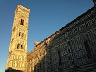
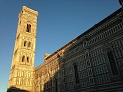

| Gdzie? | |||
|---|---|---|---|
| Gdzie? | |||
| POLSKIE GóRY | Zamek Czocha | Bieszczady | Sanok |
| DAWNA CK MONARCHIA | Węgry |
Rumunia | Austria |
| WŁOCHY PóŁNOCNE I ŚRODKOWE | Włochy | Włochy | Włochy |
| WŁOCHY, VENETO | Włochy | Włochy | Włochy |
Studia podyplomowe: Technologie internetowe
Kurs: Programowanie WWW
Laboratorium nr 5
Tabela regularna 3 x 4 z miniaturami zdjęć
strona 1 |
strona 2 |
strona 3 |
strona 4 |
Autor: AMdr
E-mail: wiz-6665@student.pwr.edu.pl
| Gdzie? | |||
|---|---|---|---|
| Gdzie? | |||
| POLSKIE GóRY | Zamek Czocha | Bieszczady | Sanok |
| DAWNA CK MONARCHIA | Węgry |
Rumunia | Austria |
| WŁOCHY PóŁNOCNE I ŚRODKOWE | Włochy | Włochy | Włochy |
| WŁOCHY, VENETO | Włochy | Włochy | Włochy |